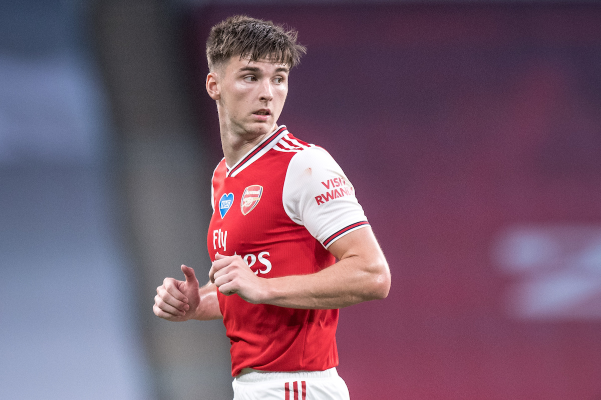
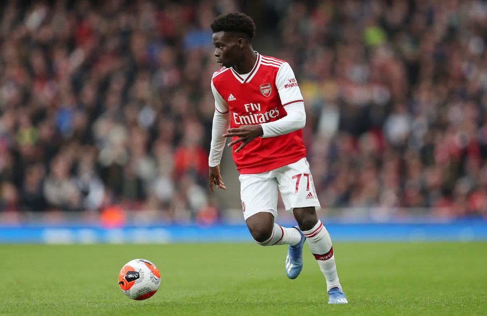

Final Score: Arsenal 2 - 1 West Ham
Mikel Arteta’s Arsenal revolution continues to make waves as the Gunners were able to secure a hard-fought 3 points against West Ham. Arsenal opened their 2020-2021 home account with newly extended club talisman Pierre-Emerick Aubameyang assisting Alexandre Lacazette in the 25th minute. A poor first half display from the North London side was capped off by a well-worked West Ham counter attack that allowed Michail Antonio to tap in a Ryan Fredericks cross just before halftime. The majority of the second half was dominated by West Ham, until Arsenal youngster Eddie Nketiah netted the match winner against the run of play. Arsenal captured their second win in as many games, as West Ham failed to collect any points from their opening two fixtures. Here are five key takeaways:
1. A Lacklustre yet Lucky Day for Arsenal
The performance we saw today was quite unorthodox from Arsenal under Arteta. The squad that, in recent times, has been praised for its defensive organization and their ability to confidently play out of their own end looked nonexistent. Arsenal struggled to counter against a well-organized five man defence and the midfield pivot of Granit Xhaka and Dani Ceballos failed to generate any chances for the majority of the match. Looking ahead, Arsenal manager Mikel Arteta may need to make adjustments with matches against Leicester City and Liverpool in the offing.
2. West Ham Must Improve
David Moyes seems to have the correct blueprint, but if West Ham wish to stay up they have to iron out a few glaring gaps in their game plan. Thomas Soucek must develop into more than just an aerial threat while also becoming a more complete midfielder. West Ham fans will also expect more from the pricey duo of Felipe Anderson and Sebastian Haller, who both began today’s match on the bench. And despite Michail Antonio’s brilliance over the last 18 months, he cost his squad an all important 3 points today when he could not finish a threatening low cross from Arthur Masuaku early in the second half. West Ham do not have the quality to dominate teams for a full 90 minutes, so it is crucial they do not squander golden chances like that one. David Moyes has quite the task ahead of himself.
3. The Importance of Kieran Tierney
Originally making the starting eleven, it was a gargantuan blow for the Gunners when Tierney had to be replaced by Sead Kolasinac just before kickoff. A vital contributor on offense and defense, Tierney was sorely missed for his defensive prowess throughout the game. The back line appeared disorganized and open, allowing West Ham multiple attacking chances. On the offensive end, Pierre-Emerick Aubameyang looked much less threatening when he did not have Tierney overlapping him and wreaking havoc on the opposition’s decision making. However, it is important to note that Tierney’s absence was magnified by the ever so disappointing performance of Sead Kolasinac, who may have played his last match for the Gunners.

4. Saka Shines Again
In a match where Arsenal looked off-beat, fatigued, and unimaginitive, Bukayo Saka was a lone bright spot for the North London side. As he constantly received the ball and drove forward, it was no surprise that he was crucial in creating both goals, playing a brilliant ball for the match winner. Saka picked the ball up, drove inside, and drew out 3 defenders before perfectly weighting a ball into the path of Dani Ceballos who had slipped in behind the West Ham backline. Ceballos played it to Nketiah, who fired Arsenal ahead into a wide open goal, earning all three points.

5. A Selection Dilemma for the Gunners
Despite scoring the opener, Arsenal forward Alexandre Lacazette put together another uninspiring performance. He was slow on the ball, costly in possession, and had virtually no first touch. As a player who usually drops deep and orchestrates counter attacks, Lacazette usually thrives through those attributes. Substitute Eddie Nketiah scored just 9 minutes after being brought on for Lacazette. Contrary to his French counterpart, Nketiah looked lively on the field, pressuring the West Ham backline while also offering a greater threat going forward. Over the coming weeks, it will be interesting to see if Arsenal manager Mikel Arteta backs Lacazette to improve upon his performances or opts to see what England’s U-21 captain can do with more match time.